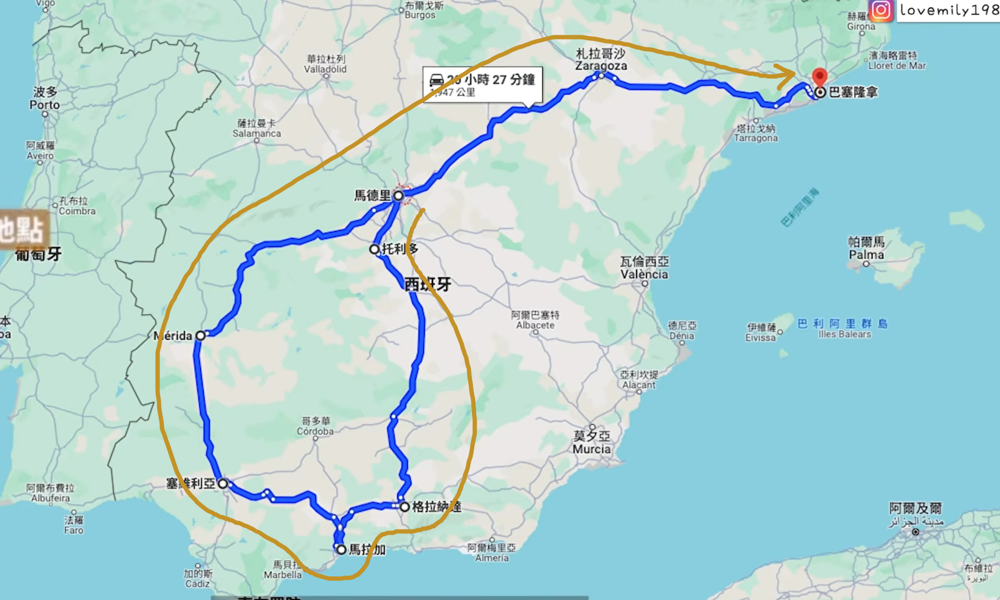

马德里优先加 1–2 晚
返程前连住 3–4 晚
两条包车方案最后都只留 2 晚；增加时间后，宅邸收藏和普拉多可以分不同半天。内陆路线前段中转的 1 晚，不等于最后有连续 3 晚可用。
多出的半天怎么用：塞拉尔博＋西班牙广场散步；另一半天选拉萨罗或利里亚。普拉多单独留半天。
从古城到海岸，在地图上找到下一站。
没有匹配的城市，试试其他名称或地区。
按你们喜欢“古宅里参观家族收藏”的兴趣，重点补充停留较久的城市。这里把保留生活陈设的宅邸、私人收藏发展成的博物馆、艺术家故居分别说明，也加入地方美术与传统工艺。先选最感兴趣的几处，让参观之间留出吃饭和散步的时间。
以下是可选的停留调整，按城市与兴趣取舍，不是把全部景点排进现有行程。晚数与可用整天不同，抵达日和离境日需留交通余量。
返程前连住 3–4 晚
两条包车方案最后都只留 2 晚；增加时间后，宅邸收藏和普拉多可以分不同半天。内陆路线前段中转的 1 晚，不等于最后有连续 3 晚可用。
多出的半天怎么用：塞拉尔博＋西班牙广场散步；另一半天选拉萨罗或利里亚。普拉多单独留半天。
3–4 晚，艺术兴趣强选 4 晚
原方案 3 晚足够经典建筑；若加入私人收藏与美术馆，4 晚更容易消化，也能给抵达日留调整时差的余地。
多出的半天怎么用：阿马特耶＋格拉西亚大道；另一天哥特区＋马雷斯。MNAC、米罗与毕加索按兴趣择一。
建议 3 晚
原方案 2 晚以王宫、大教堂为主。多一天后可以加入一至两处私人宅邸，还能留出庭院、咖啡与老城慢行。
多出的半天怎么用：莱布里哈＋美术馆；偏建筑则换彼拉多，偏花园则换杜埃尼亚斯。每半天最多两处小馆。
2 晚基础；文化慢游选 3 晚
阿尔罕布拉与阿尔拜辛仍是核心。若想认真看画家花园、洛尔迦故居，新增一天才比较舒展；不必为了凑景点加住。
多出的半天怎么用：罗德里格斯－阿科斯塔＋山坡散步；洛尔迦故居另配公园半天。宫内美术馆有余力再顺访。
保留 2 晚；休整兼看馆可 3 晚
内陆路线本就用马拉加放慢节奏。一座美术馆加海边足够充实；只有想把提森、毕加索、考古都细看时才考虑再住一晚。
多出的半天怎么用：提森或毕加索二选一＋老城；偏考古改选马拉加博物馆。
2 晚基础；工艺与艺术慢游 3 晚
两水侯爵宫适合直接加入老城日。想同时看美术馆、丝绸工艺、海边和未来感建筑时，再加一天。
多出的半天怎么用：两水侯爵宫＋老城；美术馆＋图里亚花园。丝绸博物馆与丝绸交易所连看。
1 晚通常足够；庭院深看可 2 晚
东海岸方案过夜后，把次日上午留给维亚纳，比当晚硬塞所有景点合适；会压缩后续长途车程，必要时早出发或加一晚。
多出的半天怎么用：维亚纳含宫内收藏＋庭院；胡里奥·罗梅罗馆按兴趣顺访。
1 晚基础；考古兴趣强可 2 晚
内陆方案从马德里驾车抵达，再看所有遗址和馆会紧。争取抵达日看馆、次日上午看剧场；若到达晚，第二晚比赶场更合适。
多出的半天怎么用：国家罗马艺术博物馆 1.5–2 小时，另半天剧场＋竞技场。
默认先看宅邸与收藏；选择“全部类型”可查看所有新增博物馆、美术馆与地方特色。照片是建筑、庭院或展厅实景参考，不保证具体作品在 2027 年到访时仍在同一位置展出。
参观时长为安排建议，通常不含交通和排队；开放、语言、票种与展览请在出发前再核对。每处“官方介绍／参观信息”均可直达来源。阅读文字版清单 ↗
巴塞罗那 → 萨拉戈萨 → 马德里（中转）→ 梅里达 → 塞维利亚 → 马拉加 → 格拉纳达 → 托莱多 → 马德里
我的判断：可行，更适合愿意花时间看古城和罗马遗迹的你们。沿图中蓝线可辨认的停靠点整理，配合你们的“巴塞罗那进、马德里出”，从巴塞罗那接入马德里，再走南部环线。图上出现的背景地名不等于停靠点；科尔多瓦、龙达均未作为本方案必到站。
萨拉戈萨补充阿拉贡建筑，梅里达看罗马剧场和竞技场，马拉加提供海边与艺术。格拉纳达仍留完整一天给阿尔罕布拉。
图中 17 天线：约 1900 km，8 个转场日，偏古城和罗马遗迹；马德里停两次，前半段连续换酒店。
东海岸 15 天线：约 1700 km，6 个转场日，经瓦伦西亚、阿利坎特、龙达和科尔多瓦，住宿转换更少。若只有 15 天且是第一次去，我更倾向这条。
如果对罗马遗迹兴趣一般，优先考虑把梅里达换为科尔多瓦并重排南部顺序；本页新增地图保留你图里的城市组合，便于比较。
每城列 3–4 个候选景点，不代表全部必须入内。点击卡片查看已有照片、详细描述、建议时长及游览提示。马德里合并列出，两次停留分工不同。
以下是规划范围，非截图中的原始用时，也不是实时导航；休息、用餐、游览、进出城与拥堵另计。格拉纳达北上托莱多的当天以转场为主，景点拆到翌日上午。
| 日期 / 路段 | 纯驾驶安排 | 道路距离与依据 |
|---|---|---|
| 4/5 · 巴塞罗那 → 萨拉戈萨 | 约 3–3.5 小时 | 约 300 km · 参考来源 ↗ |
| 4/6 · 萨拉戈萨 → 马德里 | 约 3–3.5 小时 | 约 310 km · 参考来源 ↗ |
| 4/7 · 马德里 → 梅里达 | 约 3.5–4 小时 | 约 341 km · 参考来源 ↗ |
| 4/8 · 梅里达 → 塞维利亚 | 约 2–2.5 小时 | 约 192 km · 参考来源 ↗ |
| 4/10 · 塞维利亚 → 马拉加 | 约 2.5–3 小时 | 约 197 km · 参考来源 ↗ |
| 4/12 · 马拉加 → 格拉纳达 | 约 1.5–2 小时 | 约 124 km · 参考来源 ↗ |
| 4/14 · 格拉纳达 → 托莱多 | 约 4–4.5 小时 | 约 364 km · 参考来源 ↗ |
| 4/15 · 托莱多 → 马德里 | 约 1–1.5 小时 | 约 74 km · 参考来源 ↗ |
16 天：马拉加减 1 晚，仍保留全部城市，取消完整海边休整日。15 天：再把托莱多改为格拉纳达北上时的途中半日游，当天会很长；不把它作为首选版本。
18–19 天：优先给塞维利亚与梅里达各加 1 晚，用于慢逛或罗马艺术博物馆，先放松节奏。
可先询 4/5–4/15 连续 11 个日历日长途服务，包含 8 个转场日及 3 个城市停留日；4/2 接机与 4/17 送机单列。与全程车辆随行方案比较，写明司机食宿、服务时长、停车及异地结束费用。
优先确认阿尔罕布拉 4/13 的含纳斯里德宫门票；萨拉戈萨宫殿与其他重点景点逐一核对预约、开放和当日活动。所有日期仍为草案。

巴塞罗那 → 瓦伦西亚 → 阿利坎特 → 格拉纳达 → 龙达 → 塞维利亚 → 科尔多瓦 → 马德里
先按 2027/4/2 出发、4/15 从马德里回国、4/16 抵沪排一份可调整的草案。8 座主要停留城市，7 个住宿点；龙达途中游览，托莱多另设可选加停。城际均包车，市内以步行和按需接送为主。
高迪建筑与海滨老城是第一段主角。两整天加抵达日下午，先适应时差，第四天再开始长途包车。
值得认真停留：现代的艺术科学城、哥特式丝绸交易厅、中央市场可以形成完整对比；也留得出吃一顿当地米饭的时间。
这站主要提供海边休息，把长车程拆成两天。下午看城堡、逛滨海步道即可。如果特别不喜欢换酒店，它是最先可删的一晚。
必保留。抵达日下午看阿尔拜辛与观景台；第二天安排阿尔罕布拉及花园。优先确认含纳斯里德宫的门票，其指定时段决定当天顺序。
阿尔罕布拉官方参观说明 ↗包车很适合加入这一站：新桥、峡谷、老城与前面的宫殿城市形成反差。相对格拉纳达直接去塞维利亚，多约 1.5 小时驾驶；算上游览，当天会偏长。
王宫、圣十字区、大教堂和弗拉门戈是南部的另一组重点。西班牙广场放在离开当日早晨；若加一天假期，这里值得延至 3 晚。
清真寺大教堂和罗马桥值得专程停留。把它放在塞维利亚之后、北上马德里之前，游览与长途驾驶便能分在两天。
最后留一整天加到达日下午，挑王宫或普拉多作为主菜。若喜欢艺术、想慢逛购物，最值得再加一晚，让回国前更从容。
城市看点参考 西班牙国家旅游局东海岸路线及各城市官方指南；住宿晚数与取舍是针对你们需求的规划建议。点击上方地图城市，可看已有的景点照片和详细介绍。
下表为普通道路条件下的驾驶规划范围，不是 2027 年实时路况。酒店位置、车型、休息和停车会改变耗时；“驾驶时间”与“当天总时长”分别看。
| 日期 / 路段 | 纯驾驶安排 | 游览与休息怎样留 | 道路参考 |
|---|---|---|---|
| 4/5 巴塞罗那 → 瓦伦西亚 | 约 3.5–4 小时 | 转场合计留 4.5–5 小时；下午只选一片区域游览。 | 约 349 km ↗ |
| 4/7 瓦伦西亚 → 阿利坎特 | 约 2 小时 | 午后城堡与海边步道；当天较轻松。 | 约 158 km ↗ |
| 4/8 阿利坎特 → 格拉纳达 | 约 3.5–4 小时 | 转场合计留 4.5–5 小时；阿尔罕布拉预约放次日。 | 约 350 km ↗ |
| 4/10 格拉纳达 → 龙达 → 塞维利亚 | 约 4–4.5 小时 | 龙达游览与午餐留 2.5–3 小时，再加休息和上下客，全天按 8–9 小时考虑。 | 前段约 180 km ↗ 后段约 123 km ↗ |
| 4/12 塞维利亚 → 科尔多瓦 | 约 1.5–2 小时 | 上午西班牙广场，下午科尔多瓦，傍晚住下。 | 约 140 km ↗ |
| 4/13 科尔多瓦 → 马德里 | 约 4–4.5 小时 | 主方案直接进马德里，途中用餐与休息，下午入住。 | 约 393 km ↗ |
| 4/13 可选：经托莱多进马德里 | 累计约 5–5.5 小时 | 加 2.5–3 小时老城/观景台和用餐后，全天约 9–10 小时；默认不加，地图上可打开预览。 | 科尔多瓦→托莱多 ↗ 托莱多→马德里 ↗ |
13 天：瓦伦西亚减为 1 晚，删除阿利坎特过夜；瓦伦西亚直接去格拉纳达，预留约 5.5–6 小时驾驶，不加托莱多。这是较赶的版本。
15 天：本页主方案，13 晚，兼顾停留与沿途风景。
17 天：塞维利亚和马德里各加 1 晚，城市次序不变，游览更舒展。我更愿意把多出来的时间用在这里。
长途连续用车可先询 4/5–4/13，共 9 个日历日；其中 6 天城际移动，3 天市内停留。4/2 接机、4/15 送机和大城市市内接送可分别报价，也可比全程方案。
请车行列清车型及行李容量、每天服务小时、司机食宿、停车/路桥费、异地结束或空返费，以及不移动那几天怎样计费。老城上下客点和司机是否兼任讲解也要写清。
暂不加入马拉加、加的斯、北部和海岛：本条线路已串起东海岸与南部主要体验，继续增加城市会明显压缩格拉纳达和塞维利亚。阿尔罕布拉门票、航班及包车均尚未预订。
查看这条路线的 15 天逐日安排 ↓暂按 15 个日历日、境外 13 晚安排；巴塞罗那进、马德里出，必去格拉纳达，城际全部包车。4/2 凌晨起飞，需 4/1 晚到浦东。日期仍可按假期与机票调整，2027 官方调休安排需发布后复核。
与原十天草案相比，回程延后到 4/15。阿尔罕布拉放在 4/9，需确认纳斯里德宫的入场时段；机票、门票与包车均未预订。原三套十天方案保留供比较。
按上海浦东出发、不经停、不转机筛选，现有方案的门户为 巴塞罗那 BCN 与马德里 MAD，实际承运航司为东航、国航。直飞航线依据 ↗
| 航司 / 航班 | 航线 / 航站楼 | 起飞 · 当地 | 抵达 · 当地 | 飞行时长 | 对应方案 / 班表适用期 |
|---|---|---|---|---|---|
| 中国东方航空MU710班表来源 ↗ | 马德里 MAD ↓ 上海浦东 PVG 马德里 T1 → 浦东 T1 | 2027-04-1711:05 | 2027-04-18 · 次日05:50 | 12 小时 45 分 | 图中路线 · 包车17天回程 公开计划适用期覆盖 2027-03-28—08-17；4/17 周六，未核验余票。 |
| 中国东方航空MU710班表来源 ↗ | 马德里 MAD ↓ 上海浦东 PVG 马德里 T1 → 浦东 T1 | 2027-04-1511:05 | 2027-04-16 · 次日05:50 | 12 小时 45 分 | 东海岸 · 包车15天回程 公开计划时刻条目覆盖 2027-03-28—08-17；4/15 周四，未核验余票。 |
| 中国东方航空MU249班表来源 ↗ | 上海浦东 PVG ↓ 巴塞罗那 BCN 浦东 T1 → 巴塞罗那 T1 | 2027-04-0200:40 | 2027-04-02 · 当天08:05 | 13 小时 25 分 | 包车环游 / 经典综合 / 轻松双城去程 计划适用期：2027-03-28—09-07，所选周五列班 |
| 中国国际航空CA839班表来源 ↗ | 上海浦东 PVG ↓ 巴塞罗那 BCN 浦东 T2 → 巴塞罗那 T1 | 2027-04-0200:40 | 2027-04-02 · 当天07:55 | 13 小时 15 分 | 包车环游 / 经典综合 / 轻松双城去程备选 计划适用期：2027-04-02—08-17，所选周五列班 |
| 中国东方航空MU709班表来源 ↗ | 上海浦东 PVG ↓ 马德里 MAD 浦东 T1 → 马德里 T1 | 2027-04-0200:45 | 2027-04-02 · 当天08:40 | 13 小时 55 分 | 南部古城去程 / 反向行程 计划适用期：2027-03-28—09-07，按每日列班 |
| 中国东方航空MU710班表来源 ↗ | 马德里 MAD ↓ 上海浦东 PVG 马德里 T1 → 浦东 T1 | 2027-04-1011:05 | 2027-04-11 · 次日05:50 | 12 小时 45 分 | 原三套十天方案的回程 计划适用期：2027-03-28—08-17，按每日列班 |
| 中国东方航空MU250班表来源 ↗ | 巴塞罗那 BCN ↓ 上海浦东 PVG 巴塞罗那 → 浦东 T1；出发航站楼订票时复核 | 2027-04-1010:55 | 2027-04-11 · 次日05:25 | 12 小时 30 分 | 反向行程从巴塞罗那出境 计划适用期：2027-03-29—09-14，所选周六列班 |
| 中国国际航空CA840班表来源 ↗ | 巴塞罗那 BCN ↓ 上海浦东 PVG 巴塞罗那 T1 → 浦东 T2 | 2027-04-1012:10 | 2027-04-11 · 次日06:45 | 12 小时 35 分 | 反向行程回程备选 计划适用期：2027-03-28—09-07，按每日列班 |
4 月 2 日的三班去程均为凌晨起飞，需在 4 月 1 日晚前往浦东机场。图中 17 天方案为 4 月 17 日回程、4 月 18 日抵沪；东海岸 15 天方案为 4 月 15 日回程、4 月 16 日抵沪；原三套十天方案仍是 4 月 10 日回程；MU250、CA840 供比较“马德里进、巴塞罗那出”的反向安排。表内航班均未出票。
Vueling 直飞，飞行约 1 小时 40 分。未取得 2027-04-05 可核实的具体班号与起降时间。建议优先挑上午出发、下午前抵达的航班；这是选班偏好，不是已确认班次。市区往返机场、值机和候机合计按半天转场预留，行李额另查。Vueling 官方航线与查询 ↗
航司官网上能搜到上海—西班牙行程，并不一定代表其自营不停站直飞。代码共享按实际承运人核对；其他大航司若提供经转方案，需要展开查看中转点。
优先比较：① 东航多城市 PVG→BCN、MAD→PVG；② 反向 PVG→MAD、BCN→PVG；③ 南部方案 PVG⇄MAD。再比较国航去程＋东航回程的分开购票总价。本次未获得可验证的所选日期实时报价，不能判断哪组最便宜。
价格接近时，经典综合与轻松双城仍优先巴塞罗那进、马德里出；南部古城使用马德里往返。反向若价格或时间更合适，需要同时调整酒店顺序与预约日期，地图当前展示的是原定方向。
先选图中17天线或东海岸15天线：去程均暂排4/2，回程分别为4/17或4/15。调整假期时，同步平移酒店、包车和景点日期。
优先确认阿尔罕布拉含纳斯里德宫的票，再确定格拉纳达两晚住宿；巴塞罗那同时核对圣家堂时段。
列明停靠与住宿城市、人数行李、服务时长和司机费用。图中路线北上托莱多当天、东海岸版龙达当天的时长单独确认；报价确认前不假定门票或讲解已包含。
精选中文攻略、宅邸实访与游玩视频，重点覆盖巴塞罗那、马德里、塞维利亚、格拉纳达、马拉加、瓦伦西亚和科尔多瓦。点击资料卡可跳到城市景点地图，比较位置与顺路组合。
已收录 27 份资料，其中 8 份官方中文 PDF 已保存在文件夹。网页与视频需联网，视频依据标题、简介和章节筛选，未逐段观看。旧版手册用于文化背景和景点选择，2027 年的开放、票价与预约请回到景点官网核对。核对日期：2026-09-19。